Snow reports · Alps
Alps: Where did the most fresh snow fall in the Alps? Fresh snow at Le Reposoir Chalet Neuf: 128 cm in the last 72 hours, including 88 cm in the last …
Snow by country today
The whitest countries today: Austria (99 %), Slovenia (95 %) and Switzerland (73 %).
Most new snow in the week ahead: France (3 cm), Austria (3 cm) and Italy (3 cm).
Snow today at the main resorts
- La Grave · 158 cm
- Orelle · 146 cm
- Val Thorens · 146 cm
- Val Thorens · 142 cm
- Les Deux Alpes · 120 cm
- Alpe d'Huez Grand Domaine · 113 cm
- Zugspitze · 86 cm
- Les Arcs · 84 cm
- Le Grand Domaine · 83 cm
- Bonneval-sur-Arc · 82 cm
- Espace Haute Maurienne Vanoise · 80 cm
- Les Grands Montets · 80 cm
- La Rosière · 78 cm
- Les Trois Vallées · 77 cm
- Courmayeur · 75 cm
- Glacier 3000 · 74 cm
- Paradiski · 73 cm
- La Thuile ski · 72 cm
- Les Ménuires · 72 cm
- Stubaier Gletscher · 72 cm
- Brévent/Flégère (Chamonix) · 70 cm
- Anzère · 69 cm
- Ovronnaz · 68 cm
- Arêches Beaufort · 66 cm
Where did the most fresh snow fall in the Alps? Le Reposoir Chalet Neuf, 128 cm in 72 hours (22 November)

Where did the most fresh snow fall in the Alps? Fresh snow at Le Reposoir Chalet Neuf: 128 cm in the last 72 hours, including 88 cm in the last 24. SnowScope now puts about 42 cm on its upper slopes. Confidence: good for the trend, lower for any single number.
The fresh-snow numbers
Next on the list: La Grave, Alpe d'Huez Grand Domaine and Orelle, with 127 cm, 123 cm and 121 cm in 72 hours.
The snow map in the Alps shows 108,680 km² of white ground today and snow at 1,104 of 1,204 resorts.
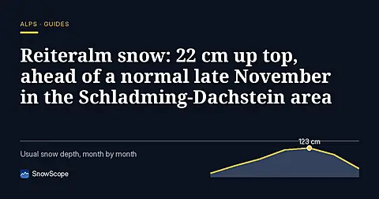
Reiteralm near Schladming has its early snow. Today's depth, what a usual December and Christmas bring, and how this quiet family area fits into Ski amadé.
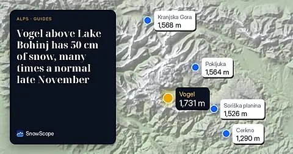
Slovenia's Vogel ski area got a big storm this week. Today's snow, why the Julian Alps catch these storms, and what usually happens next in December.

Snow depth in Chamonix on 27 November, Christmas odds from 46 winters at the Grands Montets and Brévent, and why the valley floor is a different story.
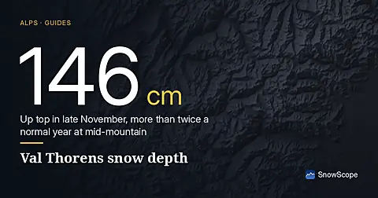
Europe's highest ski resort starts December deep. How rare this is in 46 winters, what it means for December and Christmas, and where the best snow is.

Tignes and the Espace Killy go into December far ahead of a normal year. What New Year's week usually looks like at 2,500 m, and how to plan it.

La Grave has the deepest snow in the French Alps at 158 cm upper slopes. Peak season runs weeks 15-17. Data from 27 November 2026.

Alps snow forecast for the next 3 weeks from the 50-member ECMWF ensemble, NOAA GEFS and NASA MODIS: 19.1 cm of fresh snow on average this week (normal 17.8), then only 9 cm from 1 to 8 December (normal 21.9). Isola 2000 74 % above normal, Chamonix 6 %.
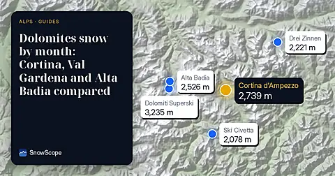
How snow depth changes month by month at three top Dolomites resorts across 46 past winters, from base to summit.

14 Swiss resorts tracked on 23 November; Zermatt leads with 63 cm depth, 29 cm more forecast by 26 November.

Zugspitze tops the region with 63 cm on 23 November. Nine resorts have snow; 34 cm fell in three days at Nebelhorn.

Prà Alpesina will see 57 cm of new snow by 26 November. Forecast data from 23 November shows heaviest falls on 25 November as freezing level rises.

Alpe d'Huez got 106 cm of fresh snow in 72 hours by 23 November. More powder coming, but watch for rain mid-week.

Twelve famous Alpine resorts ranked by their usual December snow depth at mid-mountain and the top, from 46 past winters, with the poor-December floor for each and the weeks that never fail.

La Grave has 171 cm on upper slopes today, which is 68% of normal for late November. The Alps saw sharp gains this weekend.

The Alps will collect up to 95 cm of new snow in the next 14 days, with 63% arriving in the first week. Best conditions above 1500 m from November 23. Data from November 22.

By 25 November, 64 cm of new snow forecast at Jungfraujoch Snow Fun Park. Data from 22 November.
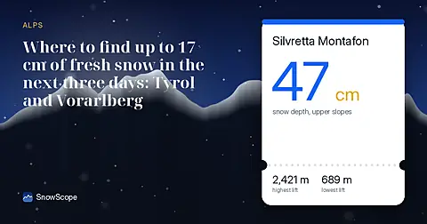
Lech/Zürs leads with 47 cm depth and 46 cm fresh snow in 72 hours. All 11 resorts have snow. Data from 22 November.

The Mölltal glacier above Flattach: usual snow depth at the base, mid-mountain and the top from 46 past winters, from the first snow in September to the May skiing, and why the depth is a different world from the valley.

Tignes climbs from 1559 m to 3447 m across 46 past winters. Base: 117 cm peak. Mid-mountain: 216 cm. Glacier: 372 cm. Data from November 2026.

Where did the most fresh snow fall in the Alps? Fresh snow at Le Reposoir Chalet Neuf: 128 cm in the last 72 hours, including 88 cm in the last 24. …

46 winters of snow history at Alpe d'Huez show peak depths of 52 cm at base, 184 cm mid-mountain, 440 cm at top. Data from 1980–2026.

0 °C level in the Alps next days: 1,330–3,210 m. Snow line peaks at 2,900 m on 22 November. Rain-on-snow risk at mid-mountain resorts Sunday 22 November.

Fourteen days of new snow across the Alps from 22 November to 5 December: Les Deux Alpes gets about 94 cm, with 73% arriving in week one. Data from 21 November.
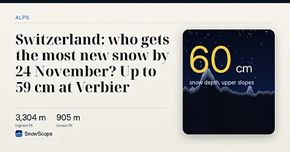
Snow in Switzerland on 21 November: snow depth on the upper slopes, fresh snow, the next three days and the pick for a short trip.

Kaprun leads Austria with 62 cm. Twelve resorts tracked on 21 November; more snow forecast through 24 November.

Alps snow report, 21 November: Alpe d'Huez has 92 cm on upper slopes. Orelle leads the region with 136 cm. Fresh snow incoming by Tuesday.

Les Arcs received 102 cm of fresh snow in the past 72 hours with 80 cm forecast by 24 November. SnowScope report for 21 November.

Snow report for 20 November: Fellhorn/Kanzelwand leads Bavaria with 44 cm, backed by 35 cm of fresh snow in three days.

Val Thorens leads with 143 cm of fresh snow in 72 hours as of 20 November. Alpe d'Huez forecast to gain 121 cm by 23 November.

Les Contamines gained 145 cm of snow in 72 hours; upper slopes hold 115 cm. More powder is forecast for the weekend.

5 resorts in the Alps, 46 past winters, one date: here is how today compares. Clearly above normal: 0. Confidence: good for the trend, lower for any …

Les Arcs leads with 166 cm on upper slopes. Snow falls through Sunday. Best runs are high and north-facing. Data from 20 November.

Early-season snow in the Alps is running 38% above the 46-year average. La Plagne's mid-slopes hold 36 cm more than usual for this date, with heavy snow forecast through Sunday.

Alpine day passes from 36 EUR: nine resorts compared by price, kilometres of runs and the snow they usually hold, to find the best day of skiing for your money.

Glacier skiing from 68 EUR a day: we compared seven glaciers in France, Austria, Germany and Switzerland by price and by the snow they usually hold in December.

Six days of skiing from 191 EUR: we ranked ten cheap ski weeks in Europe by price, then checked 46 past winters to see where the snow is reliable.

From 20 EUR on an opening weekend to 6-day passes before Christmas: a calendar of the cheapest early-season ski deals in the Alps for 2026, with the snow you can expect.

Val Thorens leads with 133 cm on 19 November. All 12 UK favourite Alpine resorts have snow; fresh powder across the range.

Zermatt has 47 cm on upper slopes today, 690% above the November median. The 0°C level stays above 2200 m through Friday.

Snow report for 18 November: Zermatt leads Swiss resorts with 47 cm on the upper slopes. Fresh snow arrives across the Alps.

Snow in Austria on 18 November: snow depth on the upper slopes, fresh snow, the next three days and the pick for a short trip.

New snow forecast for the Alps through early December. Saint François Longchamp leads with 228 cm expected over 14 days, starting with 35 cm on Thursday.

Alps snow report 18 November: Orelle leads with 111 cm upper-slope snow. Weekend forecast brings 100+ cm new snow at top resorts.

Alpine snow forecast 18 November: 110 cm expected at Orelle, 105 cm at Les Grands Montets. Best snow arrives Thursday and Friday.

Snow in Bavaria and the Black Forest on 17 November: snow depth on the upper slopes, fresh snow, the next three days and the pick for a short trip.
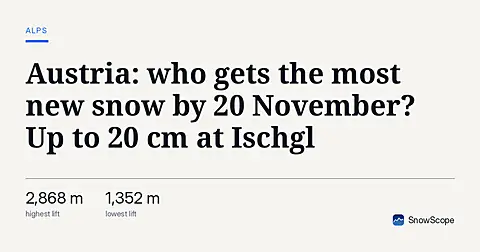
Ischgl leads Austria's snow forecast with 20 cm coming by 20 November. On 17 November, all 12 resorts have snow on upper slopes.

Les Grands Montets saw 74 cm of new snow in the last 72 hours, with more forecast for the coming days, according to our model on November 17, 2026.

Val Thorens leads UK Alpine favourites with 108 cm now and 102 cm forecast by 20 November. Data from 17 November.

96 cm of new snow forecast for Les Arcs over the next three days, with today bringing the heaviest falls.

Sestriere forecast for 23–29 November: 30 cm at the top, with a range of 15–44 cm. Wednesday 25 brings the peak snowfall.

Fresh snow arrives at Madonna di Campiglio next week: 27 cm at the summit, with the heaviest falls on 25–27 November. Best day to ski is 26 November.

Val Gardena gets 11 cm at the top next week, most of it on 25–26 November. The base receives only 6 cm, suggesting a snow line on the lower slopes.

Cortina d'Ampezzo gets 13 cm at the summit next week (5–21 cm range), mostly on 25–26 November. Light refresh, not a base builder. Data from 16 November 2026.
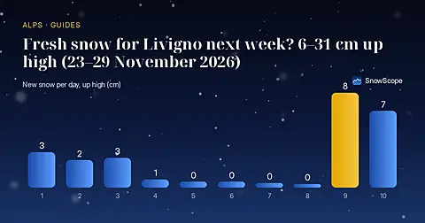
Livigno's next week brings 19 cm median at the top (6–31 cm range), peaking Wednesday 25 and Thursday 26. Data from 16 November.

Courmayeur gets 26 cm of snow next week at 2700 m, with a range of 8–44 cm. Best days are 24–26 and 28–29 November. Forecast from 16 November 2026.

Next week Cervinia receives 23 cm at the top (3400 m), with Thursday 26 November as the peak snowfall day. Forecast from 16 November 2026.

Saalbach expects 17 cm mid-range at the top next week (23–29 Nov), with the best day on 29 Nov. Range 3–31 cm shows wide uncertainty.

Stubai Glacier expects 14 cm at the top next week (23–29 Nov), with the best snow on Thursday 26 November. Data from 16 November.

Hintertux gets 14 cm at the top next week (23–29 Nov): a surface refresh on the glacier, not a powder storm. Data from 16 November.

Mayrhofen forecast for 23–29 November: top gets 17 cm (2–31 cm range), best day is 29 November with 5–10 cm. Data from 16 November.

Kitzbühel forecast for 23–29 November: 18 cm at the top, with Friday and Sunday bringing the most snow. Data from 16 November.

Obergurgl will get 13 cm at the top next week (23–29 Nov), with the best day on 26 Nov. Light refresh, not a storm.
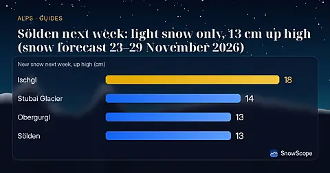
Sölden forecast: 13 cm at 3100 m next week, peaking Thursday 26 November. Upper slopes hold most snow; base gets 8 cm. Data from 16 November 2026.

Lech-Zürs faces a split forecast: modest snow this week, then 30 cm next week (7–53 cm range). Best day is Sunday 29 November.

Next week Ischgl's top slopes collect 18 cm (forecast 23–29 Nov). Thursday 26 is the heaviest day. Data from 16 November 2026.

St. Anton forecast for 23–29 November: 25 cm upper slopes, 25 cm mid-mountain, 18 cm base. Sunday 29 November is best. Data from 16 November.

Andermatt forecast for 23–29 November: 21 cm at the top, 19 cm mid-mountain, 15 cm at the base. Best snow on Wednesday 25 November.

Saas-Fee gets 22 cm on upper slopes next week, with Thursday 26 November the heaviest day. Forecast from 16 November 2026.

Engelberg snow forecast for 23–29 November 2026: 22 cm at the top (2–42 cm), 7 cm at the base, snowiest day Thursday 26 November, with neighbours compared.

Laax forecast 23–29 Nov: 21 cm at the top, 17 cm mid-mountain, 6 cm at base. Thursday 26 is the heaviest day.

Davos forecast for 23–29 November: 16 cm at the top, Thursday 26 November heaviest. Snow line sits high; best on Parsenn.

St. Moritz forecast for 23–29 November: 19 cm at the summit, 17 cm mid-mountain, 16 cm at base. Best snow Wednesday 25 through Friday 27.

Verbier's upper slopes get 24 cm next week (5–42 cm range). Thursday 26 November is the peak day. Forecast from 16 November.

Zermatt gets 23 cm of snow next week at 3800 m, with Thursday 26 November the best day. Forecast from 16 November 2026.

Next week Megève's top slopes will see 27 cm of snow (range 9–46 cm). Wednesday 25 brings the peak, with 7 cm. Data from 16 November.

Next week at Flaine: 27 cm forecast at the top (9–46 cm range), with four key snow days. Data from 16 November.

Avoriaz forecast for 23–29 November: 29 cm at the top (range 9–48 cm), 27 cm mid-mountain, 17 cm at base. Best days: 24, 25, 26, 29 November.

Serre Chevalier forecast for 23–29 November: 47 cm at the top, 40 cm at mid-mountain, 18 cm at the base. Wednesday 25 November is the peak day.

La Grave's top slopes near 3400 m will collect 49 cm in the week of 23–29 November 2026, with Wednesday 25 as the peak day. Data from 16 November.

Les 2 Alpes forecast for 23–29 November: 47 cm at 3200 m, 41 cm at 2400 m, 14 cm at base. Wednesday 25 is the peak day.

Alpe d'Huez forecast for 23–29 November: 40 cm at the top, 35 cm mid-mountain. Wednesday 25 is the key day. Data from 16 November.

La Plagne's upper slopes forecast 28 cm of fresh snow next week (23–29 Nov), building on 99 cm from earlier. Data from 16 November 2026.

Les Arcs forecast for 23–29 November: 29 cm at the top, 26 cm mid-mountain, 12 cm at the base. Data from 16 November.

Méribel's upper slopes collect 28 cm next week (23–29 Nov); most falls Wed–Thu and Sun. Data from 16 Nov.

Courchevel gets 27 cm at the top 23–29 November, with Wednesday 25 as the heaviest day. Forecast from 16 November.

Val Thorens receives 30 cm at the summit next week (23–29 Nov), with the best day on 25 Nov. Snow data from 16 November.

Tignes will collect 29 cm at the top next week, with Thursday 26 November as the snowiest day. Forecast from 16 November.

Val d'Isère gets 28 cm next week (10–46 cm range) with Thursday 26 November as the peak snowfall day. Forecast from 16 November 2026.

Chamonix's next week brings 27 cm at the top (8–46 cm range), peaking on Wednesday 25 November. Forecast for 23–29 November 2026.

La Grave leads the Alps with 97 cm on upper slopes. Snow coverage is shrinking as early winter builds unevenly across the region on 15 November.

79 cm new snow forecast for Les Grands Montets from 16–18 November, mostly above 2000 m elevation, based on forecast from 15 November.
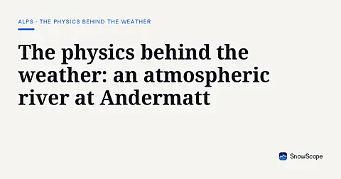
At Andermatt (2963 m) the forecast gives 75 mm of precipitation from 15 November to 20 November. During the wet hours the 0 °C level stands near 2160

Les Deux Alpes: how much fresh snow fell? 38 cm in 72 hours (15 November). Where did the most fresh snow fall in the Alps? La Grave got 41 cm of new …

Krvavec mid-mountain has 13 cm typical snow on 15 December in 46 winters, but bare ground in 11 of them. Day pass EUR 47.

Ski 157 km of mapped runs in Serre Chevalier where the top of the mountain has a 100 % chance of snow by mid-December.

Turracher Höhe has 23 cm at mid-mountain on a typical 15 December, but only 39% of winters reach 30 cm there in mid-December. Data from 13 November 2026.

Hochkar mid-mountain has 38 cm on a typical 15 December, and 63 % of winters had 30 cm or more in that week. Day tickets from EUR 32.90 on quiet dates.

Ten European ski resorts ranked for December value, led by Les 2 Alpes with 75 cm of mid-mountain snow.
Orcières Merlette offers a high base at 1826 m and a 6-day pass from 227 EUR, making it a reliable choice for a December ski trip.

Is Alpe d'Huez worth it for December 2026? We check the snow odds, the starting price of 58.00 EUR, and compare it with Les 2 Alpes.

Slovenia's ski passes are the cheapest (Krvavec EUR 205 for 6 days), but natural December snow there is rare; Lachtal, the Hochkar and the Mölltal glacier do better.

Lachtal costs EUR 62 a day and children under 7 ski free. Mid-mountain had 30 cm or more in 72 % of Decembers mid-month onwards. Snow depth on 13 November 2026.

Ski the 131 km of runs in the Forêt Blanche this December with a six-day pass for 298 EUR.

Monterosa Ski day passes run from 40.00 to 71.00 EUR online. In December the snow is up high: 124 cm usual at 3030 m, 6 cm at 1207 m.

On 15 December at Fellhorn/Kanzelwand: 63 cm at 1965 m top, 30 cm at mid-mountain, only 10 cm at 918 m base. Plan accordingly.

Plan your December 2026 trip to Les Orres by matching weekly pass prices with our snow history of 46 past winters.

Pitztaler Gletscher holds December snow better than most Alps resorts: 87 cm at mid-mountain by mid-December, with every recent winter above 30 cm. Data 13 November 2026.

Only Zugspitze and upper Fellhorn reliably hold 30 cm by mid-December. Lower Bavarian hills offer cheaper tickets but much lower snow odds. Data from 13 November 2026.

Puy-Saint-Vincent pairs a 44 EUR adult 1-day pass with solid December snow higher up, compared here with its big neighbour Serre Chevalier.

Grimentz-Zinal offers 71 km of runs and reliable high-altitude snow for your December trip, with 6-day passes at CHF 339.00.

Austria before Christmas: Galtür EUR 258 and Kühtai EUR 269 for 6 days with 30 cm in over 90 % of winters; glaciers cost more, small hills are a gamble.

We rank French ski resorts by December snow odds and checked pass prices, starting from 36.00 EUR for an adult day pass in Les Karellis.

Galtür's mid-mountain holds 55 cm on a typical 15 December. Low-season passes cost EUR 55.50 until 18 December. Data from 46 winters, 1980-81 to 2025-26.
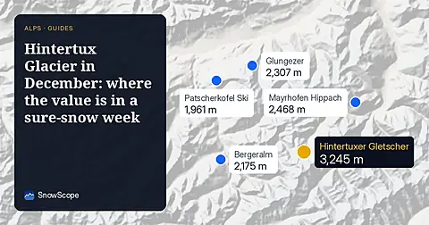
On 15 December at 3245 m, Hintertux has 98 cm of snow in 46 winters of history. Every winter had 30 cm or more in the week before Christmas up there.

Compare December snow odds and checked lift pass prices starting at 40.00 EUR across Italian ski areas for your weekend drive.

Kühtai's base at 1939 m stays reliably snowy in December. On 15 December typically 60 cm at base, 72 cm at mid-mountain, 112 cm at top. Low-season 6-day pass EUR 269 until 18 December.

Les 2 Alpes reaches 3511 m for high snow in December 2026, with an adult 6-day pass priced at 266.50 EUR.
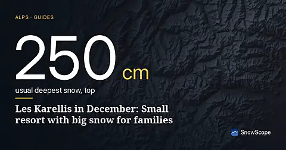
Les Karellis offers 45 km of runs and a 6-day adult pass for 191.00 EUR with a 98 % chance of snow mid-mountain in late December.

Ski Livigno for 51.50 EUR per day before December 18 when the snow at the top reaches 30cm in 100 % of past winters.

Montgenèvre has 56 cm of usual December snow at its base, giving weekend drivers deeper early cover than Sestriere across the border.